本地阅读版，依据出版社提交至PMC的原始JATS XML整理，供核对正文、图注、表格和原图。原始main.xml完整保留；此页不是出版社版式PDF。所有数字与正文冲突均保留原文，未修正或推算。实验准入状态见逐篇审核表。
Green pea peel (GPP) is a waste, and it is abundant and available to be used for biochar synthesis. GPP-derived biochar (GP) is used vastly in wastewater treatment. Moreover, heteroatom co-doping of GP could be better than its single-doped and undoped in enhancement of active sites and conductivity, and in developing electrodes for supercapacitor applications. However, uncontrolled heteroatom co-doping clogs the pores in the biochar and stops the electrolyte from penetrating the porous structure, which results in reduced capacitance and higher resistance in the biochar. This study presented the controlled synthesis of GP, nitrogen (N)-doped biochar (NGP), and N and sulfur (S) ex situ co-doped GP (NSGP) through carbonization and chemical activation. As revealed by the characterization techniques, the synthesized GP, NGP, and NSGP are nanosheets with amorphous structures and defective structures. The specific capacitance of the NSGP-based electrode material, as determined by electrochemical characterizations, is 257.01 F g−1, more than the 230.22 F g−1 and 208.78 F g−1 of NGP and GP at 1 A g−1, respectively. The assembled NSGP//NSGP supercapacitor device has an 80.25 F g−1 specific capacitance at 1 A g−1, an energy density of 13.87 W h kg−1, and a 500 W kg−1 power density with a 99.46% capacity retention after 5000 cycles at 5 A g−1. It demonstrates that NSGP has better electrochemical performance than NGP and GP because of the improved active sites and conductivity.
Green pea peel (GPP) is a waste, and it is abundant and available to be used for biochar synthesis.
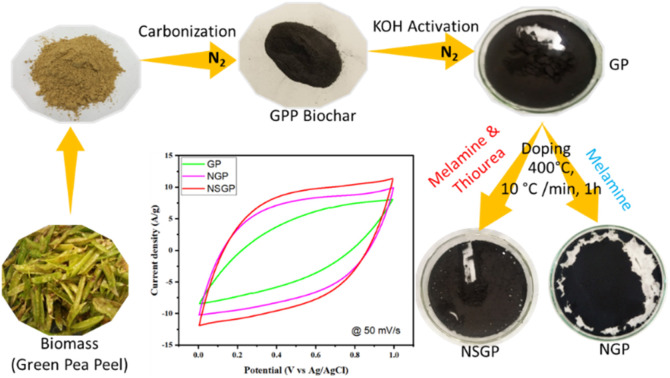
The rise in world population leads to an increase in energy demand, which causes greater reliance on fossil fuels that cause carbon dioxide emission to the atmosphere. The emission of fossil fuels causes the depletion of the ozone layer and leads to climate change,1–3 which is an issue for the world and needs necessary measures to reduce its effect on human beings and the ecosystem. It shows that the only alternative to the usage of fossil fuels is renewable energy, which is affordable and available but lacks efficient conversion and storage. An efficient energy storage device is needed to utilize green energy and decrease the reliance on fossil fuels for energy production.4–6 Supercapacitors (SC) are energy storage devices with lengthy life cycles, quick charge/discharge rates, and high power density.7 Electrochemical double-layer capacitors (EDLCs) are one of the types of supercapacitors, and EDLC electrodes are often carbon-made materials due to their surface area, conductivity, and cost.8–10
Moreover, biochar is one of the most inexpensive and effective carbon-based materials available today.11,12 It could be synthesized using the appropriate technique from different biomass precursors, and it is applicable in several industrial processes such as fuel cells, batteries, supercapacitors, dyes removal, heavy metals removal, etc. Plant wastes such as rice straw,13 peanut shell,4 rice husk,14 banana peel,15 GPP,16etc., are among the biomass precursors used to produce biochar through carbonization and activation processes. GPP is a green pea waste (Pisum sativum L.), and its annual world production is 11.7 metric tonnes.17,18 Lately, it has emerged as a precursor for the synthesis of GP because of its abundance and availability, and nowadays, it is vastly used in water treatment applications. For instance, El-Nemr et al.19 synthesized GP via carbonization of GPP with ZnCl2 at 800, 700, and 600 °C for 1 h in a CO2 environment. The GP achieved by El-Nemr was applied to remove AY 11 dye from water with a 99.10% removal efficiency when using a 1.0 g L−1 of GP and AY 11 dye concentration of 100 mg L−1.
Rubangakene et al.20 also synthesized GP by carbonizing sodium carbonate-impregnated GPP at 700 °C. The synthesized GP and its composite with iron oxide were used to adsorb methylene blue from the dye water. The GP's adsorption capacity was 217.40 mg g−1, but that of iron oxide/GP was 175.44 mg g−1. In another report by Rubangakene et al.,21 GP and ZnO/GP were used to absorb Congo red dye from water. The ZnO/GP and GP showed Congo red dye removal percentages of 98% and 90% and absorption capacities of 62.11 mg g−1 and 114.94 mg g−1, respectively.
Patil et al.22 synthesized green pea-derived biochar using KOH activation. The peas were first heated at 800 °C for 2 hours under nitrogen. Then, the biochar was activated at 800 °C for 2 hours using KOH to generate an activated biochar. The specific capacitance of the biochar is 255.06 F g−1 at 1 mA cm−2. In another study by Patil et al.,23 polyaniline and green pea-derived activated biochar composite was synthesized for supercapacitor applications, which shows the specific capacitances of 446 and 517 F g−1 on stainless steel and stainless steel mesh, respectively, at 5 mV s−1 scan rate. However, green peas are nutritional food. Therefore, GP can be used for supercapacitor applications due to its excellent adsorptive properties.
The biochar structure is enhanced by the creation of defectiveness in it, which is through heteroatom doping.15,24 Studies often address heteroatom doping of biochar because doped biochar exhibits enhanced characteristics over undoped ones, such as increased conductivity and larger active sites.25,26 Nazir et al.27 developed an N and S in situ co-doped and KOH-activated banana peel-derived biochar at 800 °C for supercapacitor applications, which showed a specific capacitance of 175 F g−1 at 1 A g−1, greater than S-doped (123 F g−1) and N-doped (115 F g−1) samples. Currently, heteroatom co-doping is much better than single-atom doping due to the existence of diatomic elements in the carbon network to enhance its pore structure, active sites, and conductivity.28,29 On the other hand, uncontrolled heteroatom doping causes the biochar's pores to fill and hinders electrolytes from penetrating the porous structure, reducing capacitance and increasing resistance. Then, using a controlled ex situ co-doping synthesis technique with precise heteroatom sources and amounts could lead to an excellent pore structure, a high specific capacitance, and good conductivity of electrode materials for effective electrochemical behavior in supercapacitor devices.
Thus, GP was synthesized by carbonizing GPP at 600 °C and chemically activated with KOH at 900 °C. NGP and NSGP were synthesized here at 400 °C using melamine and melamine/thiourea as the doping source and co-doping sources for supercapacitor applications. To the best of our knowledge, it is the first report on GP in this field. The electrochemical performances of the GP, NGP, and NSGP were investigated at first, and then, an NSGP//NSGP supercapacitor device was assembled and tested.
GPP was collected at a farm in Alexandria, Egypt. Thermo Fisher Scientific, Germany, provided 99.8% graphite foil. Sigma Aldrich of supplied carbon black, sulfuric acid (H2SO4, 95–97%), and polyvinylidene difluoride (PVDF). Suvchem Laboratory Chemicals in Egypt supplied the hydrochloric acid (HCl, 37%). Thiourea was purchased from Advent Chembio Private Limited in India. Loba Chemie supplied 98% N-methyl-2-pyrrolidone (NMP), melamine (extra pure), and potassium hydroxide pellets (85–100.5%).
The GPP was first washed with deionized water to remove dirt from it. Then, the GPP was oven-dried for 12 hours at 80 °C. The sample was pulverized using a grinder and sieved with a 106 μm sieve to achieve a uniform precursor size. The sieved GPP was heated in a furnace at 10 °C min−1 to 600 °C, held for 2 hours, and cooled at the same rate under an N2 environment. Then, the biochar was mixed with KOH (ratio 1 : 3) with 5 ml deionized water to obtain a slurry. The slurry was oven-dried at 80 °C for 12 hours and pyrolyzed at a heating rate of 10 °C min−1 to 900 °C, held for 2 hours, and cooled at 10 °C min−1. The activated biochar was washed with 1 M HCl to eliminate any unreacted contaminant and then washed with deionized water until the biochar had a pH of 7. The biochar was filtered and oven-dried for 12 hours at 80 °C to become an activated GPP-derived biochar denoted as GP.
The GP doping technique with thiourea as an N and S source and melamine as an N source is also displayed in Fig. 1. To produce an approximate ratio (10 : 1 : 1) for GP : N : S in 5 ml of deionized water, 1 g of GP was combined with 123 mg of melamine and 231 mg of thiourea in a mortar. Subsequently, the slurry was heated at 10 °C min−1 in a muffle furnace to 400 °C, held for an hour, and cooled at the same rate. Deionized water was used to wash the sample until its pH was neutral. The final sample was filtered and oven-dried at 80 °C for 12 hours to generate S and N co-doped GP, abbreviated as NSGP. The same procedure was done on an N-doped GP (NGP) with 123 mg of melamine only to establish the supremacy of co-doping.
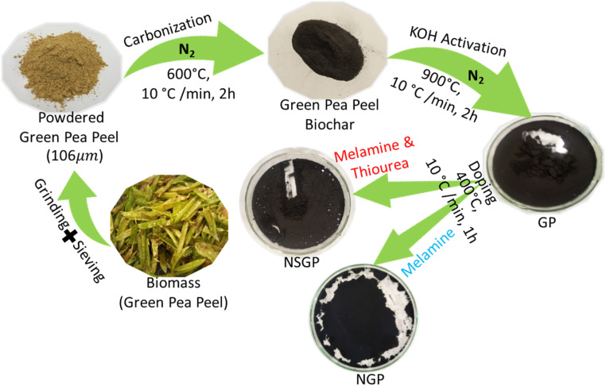
Transmission electron microscopy (TEM) and energy-dispersive X-ray spectroscopy (EDS) mapping were conducted with a Japanese-made JEOL JEM-2100 F (URP) to study the GP, NGP, and NSGP samples' microstructure and elemental composition distribution at voltage 200 kV, probe current 1 nA, energy range 0–40 eV, and live time of 180 s. Scanning electron microscopy (SEM) Carl ZEISS Sigma 500 VP with 2 kV accelerating voltage was used to investigate the morphology of the synthesized samples. X-ray diffraction (XRD) Panalytical Xpert3 powder model was used to investigate the samples' crystal structure with Cu Kα radiation at voltage 40 kV, current 30 mA, receiving slit 0.3 mm, scan speed 12° min−1, and scan range 5–80°. Raman spectroscopy was performed with a Witeck alpha 300 RA Raman microscope to determine the graphitization degrees of GP, NGP, and NSGP with a 532 nm laser at room temperature. The nitrogen gas (N2) adsorption and desorption at 77.35 K were conducted with a NOVA touch 4LX device to examine the textural properties of the samples. Specific surface areas were determined using the Brunauer–Emmet–Teller (BET) and Barrett–Joyner–Halenda (BJH) models and pore size distributions were derived from the non-local density functional theory (NLDFT) model. Surface functional groups were determined using Fourier transform infrared spectroscopy (FTIR) with Bruker Vertex 70, KBr pellet method, sample to KBr (1 : 100), and spectra range of 500–4000 cm−1. An X-ray photoelectron spectroscopy (XPS) was done with a K-Alpha and monochromatic X-ray light of 1350 eV (Thermo Fisher Scientific, USA) to identify the elemental content of the sample.
An electrochemical investigation was conducted using a three-electrode configuration and the VersaSTAT4 workstation. For precise measurements, a uniform mixture was created by combining and sonicating the synthesized samples, carbon black, and PVDF in a specific ratio (80 : 10 : 10) with 1 ml NMP solvent for 1 hour. After preparing the mixture, it was carefully applied onto a graphite foil measuring 1 cm by 1 cm. The mixture was then oven-dried under vacuum for 11 hours at 120 °C. The mass of the biochar-based electrode was determined by subtracting its post-casting mass from its pre-casting mass, resulting in a value of 3 mg cm−2. For the three-electrode electrochemical experiment, we utilized a biochar-based electrode, a counter electrode made of platinum, a reference electrode consisting of Ag/AgCl (3 M KCl), and a 1 M H2SO4 electrolyte. CV tests were conducted between 0–1 V potential window and scan rates between 5–100 mV s−1. In addition, a series of galvanometric charge and discharge (GCD) tests were done at different current densities, ranging from 1–10 A g−1, and within 0–1 V. Eqn (1) (ref. 30) and (2) (ref. 31) were utilized to calculate the specific capacitance of the samples by analyzing the GCD and CV values obtained from the tests.
1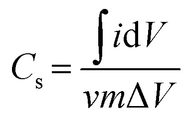
2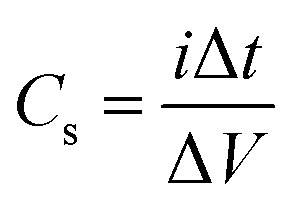
The integration of the curve is denoted by . It involves various parameters such as the scan rate (v) in mV s−1, discharge time (Δt) in s, electrode material mass (m) in grams, potential window (ΔV) in volts, current density (i) in A g−1, and specific capacitance (Cs) in F g−1.
In addition, a Swagelok cell was assembled to create a symmetric NSGP//NSGP supercapacitor device. The aqueous electrolyte had a concentration of 1 M H2SO4. A graphite sheet with a diameter of 8 mm served as the current collector, while the separator consisted of a glass fiber. The NSGP-based electrode materials were cast on a graphite sheet and then oven-dried for 12 hours at 120 °C, resulting in a mass of 1 mg cm−2. The energy and power densities of the device were determined by eqn (3) (ref. 30) and (4),31 respectively.
3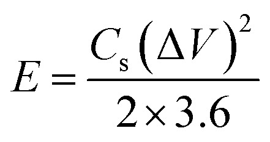
4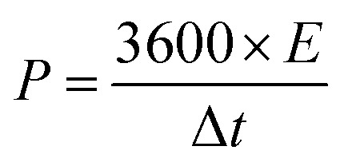
The biochar's TEM images of GP, NGP, and NSGP with numerous nanosheet layers and porous structures at different magnifications of 50, 100, and 200 nm are displayed in Fig. 2a–c, d–f, and g–i, respectively. The TEM images indicate the presence of hierarchical pore structures, which could promote charge transfer, offer large surface area, and boost electrolyte adsorption for supercapacitor applications. Fig. S1† displays the EDX mappings of GP, which exhibits the dispersion of the C, O, and N in its structure. The EDX mappings of NGP in Fig. 2j show the uniform dispersion of C, O, and N in the NGP structure. Fig. 2k also displays the homogeneous distributions of C, N, and S in the NSGP structure, which shows the effect of co-doping. The atomic percentages of the elements in GP, NGP, and NSGP are displayed in Table 1. The table shows the atomic percentage of N increases to 2.77% in NGP from 1.65% in GP to show the effect of N doping but there is a decrease in the atomic percentage of O in NGP from 19.94% in GP to 18% due to the surface emission of some O contents during the doping procedure, which lead to small increase in the atomic percentage of C in NGP to 79.23% from 78.41% in GP. The atomic percentage of N in NSGP increases to 1.93% from 1.65% in GP but the increment is lower compared to that of NGP due to the S surface disruption of some N during co-doping. Moreover, the atomic percentage decrease in O content from 19.94% in GP to 16.23% in NSGP is higher compared to that of NGP because of the surface reaction between S and O to form emission gases such as SO2, which allows an increase in the atomic percentage of C in NSGP to 81.46% from 78.41% in GP. The atomic percentage of S in NSGP is 0.38% to the effect of S in N and S co-doping. The compositional percentages by a mass of elements in the GP, NGP, and NSGP samples are displayed in Table S1,† which also follows almost the same trend in Table 1. The value of N content in NGP is more than that of GP due to N doping, while S content is seen in the NSGP due to S doping. The uniform distribution of N and S in NSGP suggests that its active sites and conductivity will be enhanced.24,32
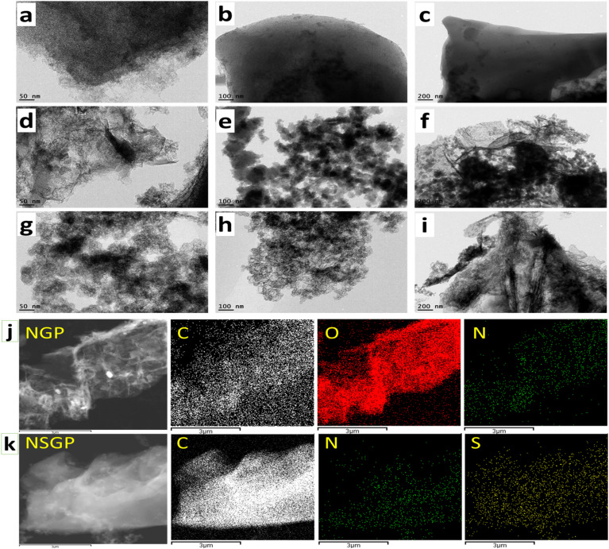
| Sample | Element (atom%) | |||
|---|---|---|---|---|
| C | O | N | S | |
| GP | 78.41 | 19.94 | 1.65 | — |
| NGP | 79.23 | 18.00 | 2.77 | — |
| NSGP | 81.46 | 16.23 | 1.93 | 0.38 |
SEM images of GP, NGP, and NSGP are shown in Fig. 3a, b, and c, respectively, in which porous structures can be observed. The effect of the KOH activator's etching causes irregular pore networks on the biochar's surface. As KOH activates the carbon in the biochar to create pores in the material, carbon dioxide, and carbon monoxide gasses are released during the activation process.33–35 At around 762 °C, potassium, hydrogen gas, and potassium bicarbonate are released from the breakdown of KOH. More heating causes potassium bicarbonate to break down into potassium and carbon dioxide, increasing the number of pores in the structure.36 For high-performance supercapacitors, these pores provide a high surface area, promoting electrolyte adsorption, and boosting the charge transfer rate.37Fig. 3a shows the visible pore structure of GP, and it facilitates the adsorption of electrolyte ions. Fig. 3b displays a pore arrangement different from GP to show the effect of N doping. One can see the doping effect of thiourea and melamine in NSGP with enhanced pores in Fig. 3c.20
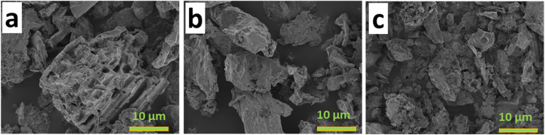
Fig. 4a displays the XRD plots of GP, NGP, and NSGP with broad diffraction peaks at around 24.42° and 44.54° in the (002) and (100) planes.38,39 The diffraction peaks, which are broad and dull, suggest that the GP, NGP, and NSGP samples possess amorphous structures.40,41 The peaks of NGP are higher than the peaks of GP and there is a small shift in the planes to indicate new crystalline structure and phase formation, which shows the effect of nitrogen doping in the GP's structure. The peak of NSGP, however, slightly shifts from GP's peak and forms a new structure and phase because the sulfur atom has a larger diameter than carbon, which disturbs the carbon by establishing distortions that function as redox reaction sites.26,27 The amorphous structure offers a disorderly carbon structure that enhances ion diffusion and adsorption, potentially improving electrochemical performance, which is beneficial for supercapacitor applications.28 The Raman spectroscopy's finding that the structures of GP, NGP, and NSGP are amorphous is supported by the XRD study. Fig. 4b shows the defective (D) and graphitic (G) bands' peaks in the Raman spectroscopies of GP, NGP, and NSGP at approximately 1331.45 and 1589.26 cm−1 Raman shifts, respectively, to determine each sample's degree of graphitization. These peaks indicate the defective and graphitic properties of the structures of the biochar.22 The quotients of D bands' intensities of GP, NGP, and NSGP by their respective G band intensities (ID/IG) are 0.88, 0.90, and 0.91. The difference in the degree of graphitization of the three samples is small and insignificant to indicate the effect of defectiveness by doping. The two-phonon vibrations of the GP, NGP, and NSGP lattices are displayed by the characteristic peak at 2868.6 cm−1 Raman shift (2D band).23
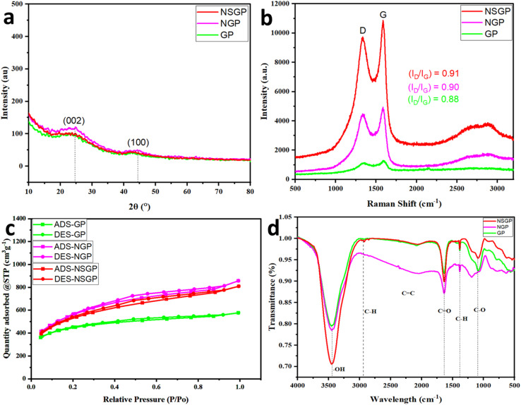
The N2 adsorption and desorption isotherms at 77 K of GP, NGP, and NSGP are displayed in Fig. 4c. The samples' isotherms show type II and IV shapes with type H4 hysteresis loops in the desorption branch. Mesoporous of the samples indicates by the type H4 hysteresis loop between the isotherms.42,43 The isotherm clearly shows a sharp increase in adsorption at low relative pressure, suggesting the presence of rich micropores. The textural information for the GP, NGP, and NSGP samples is summarized in Table 2. The GP possesses a BET surface area (SBET) of 1454 m2 g−1. Compared to NSGP and NGP, GP has a lower Vt and SBET. The increase in SBET of NGP is caused by the N doping to introduce pores in the biochar structure.42,44,45 NSGP's SBET is lower than that of NGP's SBET because S disrupts some structures during doping.46,47 The findings show that melamine and thiourea doping of NSGP guarantees active sites in the sample. Multiple unique peaks in the samples' FTIR spectra are displayed in Fig. 4d. The existence of an OH peak at 3460 cm−1 implies hydroxyl groups on the carbon structure. NSGP has a higher area under the OH peak than the areas of NGP and GP. It indicates that NSGP has the best adsorption capacity and electrode surface's wettability for electrolyte and electrode interactions among the samples, which could improve the capacitive performance of supercapacitors. The peak at 1386 cm−1 links to the alkane C–H group, while the C <svg xmlns="http://www.w3.org/2000/svg" version="1.0" width="13.200000pt" height="16.000000pt" viewBox="0 0 13.200000 16.000000" preserveAspectRatio="xMidYMid meet"><metadata> Created by potrace 1.16, written by Peter Selinger 2001-2019 </metadata><g transform="translate(1.000000,15.000000) scale(0.017500,-0.017500)" fill="currentColor" stroke="none"><path d="M0 440 l0 -40 320 0 320 0 0 40 0 40 -320 0 -320 0 0 -40z M0 280 l0 -40 320 0 320 0 0 40 0 40 -320 0 -320 0 0 -40z"/></g></svg> O peak, located at 1641 cm−1, originates from the carbonyl groups.29 The area of C <svg xmlns="http://www.w3.org/2000/svg" version="1.0" width="13.200000pt" height="16.000000pt" viewBox="0 0 13.200000 16.000000" preserveAspectRatio="xMidYMid meet"><metadata> Created by potrace 1.16, written by Peter Selinger 2001-2019 </metadata><g transform="translate(1.000000,15.000000) scale(0.017500,-0.017500)" fill="currentColor" stroke="none"><path d="M0 440 l0 -40 320 0 320 0 0 40 0 40 -320 0 -320 0 0 -40z M0 280 l0 -40 320 0 320 0 0 40 0 40 -320 0 -320 0 0 -40z"/></g></svg> O in NSGP is the largest and contributes pseudocapacitance to the electrode materials. The characteristic peaks at 1101 and 2929 cm−1 indicate the presence of C–O (alcohol or ether) groups and CH stretching, respectively, in GP, NGP, and NSGP.30
| Sample | S BET (m2 g−1) | V mic (cm3 g−1) | V mes (cm3 g−1) | V mac (cm3 g−1) | V t (cm3 g−1) |
|---|---|---|---|---|---|
| GP | 1454 | 0.67 | 0.18 | 0.05 | 0.89 |
| NGP | 1944 | 0.86 | 0.39 | 0.07 | 1.33 |
| NSGP | 1691 | 1.71 | 0.18 | 0.11 | 2.00 |
The BET surface area is SBET. The volume of micropore (Vmic) is subtraction of mesopore volume from DFT pore volume. Mesopore volume (Vmes) is determined by BJH. Macropore volume (Vmac) = (Vt – DFT pore volume). Total pore volume (Vt) is determined at 0.99 relative pressure.
The XPS survey spectrum of NSGP is in Fig. 5a. These spectra show the presence of four peaks in NSGP, S 2p at 168.12 eV, C 1s at 284.71 eV, N 1s at 399.71 eV, and O 1s at 534.71 eV. The effect of thiourea and melamine co-doping is the peaks of N and S in the NSGP spectrum. The S 2p spectrum of NSGP in Fig. 5b decomposed into four peaks related to oxidized S at 169.73 and 171.92 eV, signifying the C–SOx–C bond and S 2p1/2 and S 2p3/2 of the C–S–C bond at 164.91 and 164.15 eV, respectively.48 Furthermore, four peaks used in the deconvolution of the GP sample C 1s spectrum in Fig. S3f:† C <svg xmlns="http://www.w3.org/2000/svg" version="1.0" width="13.200000pt" height="16.000000pt" viewBox="0 0 13.200000 16.000000" preserveAspectRatio="xMidYMid meet"><metadata> Created by potrace 1.16, written by Peter Selinger 2001-2019 </metadata><g transform="translate(1.000000,15.000000) scale(0.017500,-0.017500)" fill="currentColor" stroke="none"><path d="M0 440 l0 -40 320 0 320 0 0 40 0 40 -320 0 -320 0 0 -40z M0 280 l0 -40 320 0 320 0 0 40 0 40 -320 0 -320 0 0 -40z"/></g></svg> C at 285.27 eV, C <svg xmlns="http://www.w3.org/2000/svg" version="1.0" width="13.200000pt" height="16.000000pt" viewBox="0 0 13.200000 16.000000" preserveAspectRatio="xMidYMid meet"><metadata> Created by potrace 1.16, written by Peter Selinger 2001-2019 </metadata><g transform="translate(1.000000,15.000000) scale(0.017500,-0.017500)" fill="currentColor" stroke="none"><path d="M0 440 l0 -40 320 0 320 0 0 40 0 40 -320 0 -320 0 0 -40z M0 280 l0 -40 320 0 320 0 0 40 0 40 -320 0 -320 0 0 -40z"/></g></svg> C/C–N at 284.64 eV, C <svg xmlns="http://www.w3.org/2000/svg" version="1.0" width="13.200000pt" height="16.000000pt" viewBox="0 0 13.200000 16.000000" preserveAspectRatio="xMidYMid meet"><metadata> Created by potrace 1.16, written by Peter Selinger 2001-2019 </metadata><g transform="translate(1.000000,15.000000) scale(0.017500,-0.017500)" fill="currentColor" stroke="none"><path d="M0 440 l0 -40 320 0 320 0 0 40 0 40 -320 0 -320 0 0 -40z M0 280 l0 -40 320 0 320 0 0 40 0 40 -320 0 -320 0 0 -40z"/></g></svg> N at 283.97 eV, and O–C <svg xmlns="http://www.w3.org/2000/svg" version="1.0" width="13.200000pt" height="16.000000pt" viewBox="0 0 13.200000 16.000000" preserveAspectRatio="xMidYMid meet"><metadata> Created by potrace 1.16, written by Peter Selinger 2001-2019 </metadata><g transform="translate(1.000000,15.000000) scale(0.017500,-0.017500)" fill="currentColor" stroke="none"><path d="M0 440 l0 -40 320 0 320 0 0 40 0 40 -320 0 -320 0 0 -40z M0 280 l0 -40 320 0 320 0 0 40 0 40 -320 0 -320 0 0 -40z"/></g></svg> O at 287.6 eV, respectively.49,50 Four peaks are in the NGP sample's C 1s spectra breakdown in Fig. S3b:† 284.69 eV for C <svg xmlns="http://www.w3.org/2000/svg" version="1.0" width="13.200000pt" height="16.000000pt" viewBox="0 0 13.200000 16.000000" preserveAspectRatio="xMidYMid meet"><metadata> Created by potrace 1.16, written by Peter Selinger 2001-2019 </metadata><g transform="translate(1.000000,15.000000) scale(0.017500,-0.017500)" fill="currentColor" stroke="none"><path d="M0 440 l0 -40 320 0 320 0 0 40 0 40 -320 0 -320 0 0 -40z M0 280 l0 -40 320 0 320 0 0 40 0 40 -320 0 -320 0 0 -40z"/></g></svg> C, 285.07 eV for C–C/C–N, 286.8 for C <svg xmlns="http://www.w3.org/2000/svg" version="1.0" width="13.200000pt" height="16.000000pt" viewBox="0 0 13.200000 16.000000" preserveAspectRatio="xMidYMid meet"><metadata> Created by potrace 1.16, written by Peter Selinger 2001-2019 </metadata><g transform="translate(1.000000,15.000000) scale(0.017500,-0.017500)" fill="currentColor" stroke="none"><path d="M0 440 l0 -40 320 0 320 0 0 40 0 40 -320 0 -320 0 0 -40z M0 280 l0 -40 320 0 320 0 0 40 0 40 -320 0 -320 0 0 -40z"/></g></svg> N, and 288.2 eV for O–C <svg xmlns="http://www.w3.org/2000/svg" version="1.0" width="13.200000pt" height="16.000000pt" viewBox="0 0 13.200000 16.000000" preserveAspectRatio="xMidYMid meet"><metadata> Created by potrace 1.16, written by Peter Selinger 2001-2019 </metadata><g transform="translate(1.000000,15.000000) scale(0.017500,-0.017500)" fill="currentColor" stroke="none"><path d="M0 440 l0 -40 320 0 320 0 0 40 0 40 -320 0 -320 0 0 -40z M0 280 l0 -40 320 0 320 0 0 40 0 40 -320 0 -320 0 0 -40z"/></g></svg> O,51,52 but the NSGP's C 1s spectra deconvoluted at 284.68 eV for C <svg xmlns="http://www.w3.org/2000/svg" version="1.0" width="13.200000pt" height="16.000000pt" viewBox="0 0 13.200000 16.000000" preserveAspectRatio="xMidYMid meet"><metadata> Created by potrace 1.16, written by Peter Selinger 2001-2019 </metadata><g transform="translate(1.000000,15.000000) scale(0.017500,-0.017500)" fill="currentColor" stroke="none"><path d="M0 440 l0 -40 320 0 320 0 0 40 0 40 -320 0 -320 0 0 -40z M0 280 l0 -40 320 0 320 0 0 40 0 40 -320 0 -320 0 0 -40z"/></g></svg> C/C–C, 285.01 eV for C–N, 286.42 eV for C <svg xmlns="http://www.w3.org/2000/svg" version="1.0" width="13.200000pt" height="16.000000pt" viewBox="0 0 13.200000 16.000000" preserveAspectRatio="xMidYMid meet"><metadata> Created by potrace 1.16, written by Peter Selinger 2001-2019 </metadata><g transform="translate(1.000000,15.000000) scale(0.017500,-0.017500)" fill="currentColor" stroke="none"><path d="M0 440 l0 -40 320 0 320 0 0 40 0 40 -320 0 -320 0 0 -40z M0 280 l0 -40 320 0 320 0 0 40 0 40 -320 0 -320 0 0 -40z"/></g></svg> O, and 288.78 eV for C–S/C–O in Fig. 5c.48,53 In Fig. S3h,† GP's O 1s spectrum deconvolution displays peaks of C–O (531.8), O–C <svg xmlns="http://www.w3.org/2000/svg" version="1.0" width="13.200000pt" height="16.000000pt" viewBox="0 0 13.200000 16.000000" preserveAspectRatio="xMidYMid meet"><metadata> Created by potrace 1.16, written by Peter Selinger 2001-2019 </metadata><g transform="translate(1.000000,15.000000) scale(0.017500,-0.017500)" fill="currentColor" stroke="none"><path d="M0 440 l0 -40 320 0 320 0 0 40 0 40 -320 0 -320 0 0 -40z M0 280 l0 -40 320 0 320 0 0 40 0 40 -320 0 -320 0 0 -40z"/></g></svg> O (533.1), and C <svg xmlns="http://www.w3.org/2000/svg" version="1.0" width="13.200000pt" height="16.000000pt" viewBox="0 0 13.200000 16.000000" preserveAspectRatio="xMidYMid meet"><metadata> Created by potrace 1.16, written by Peter Selinger 2001-2019 </metadata><g transform="translate(1.000000,15.000000) scale(0.017500,-0.017500)" fill="currentColor" stroke="none"><path d="M0 440 l0 -40 320 0 320 0 0 40 0 40 -320 0 -320 0 0 -40z M0 280 l0 -40 320 0 320 0 0 40 0 40 -320 0 -320 0 0 -40z"/></g></svg> O (534.19).50 The O 1s spectra deconvolution of the NGP sample in Fig. S3d† displays three peaks, C–O at 531.25 eV, C <svg xmlns="http://www.w3.org/2000/svg" version="1.0" width="13.200000pt" height="16.000000pt" viewBox="0 0 13.200000 16.000000" preserveAspectRatio="xMidYMid meet"><metadata> Created by potrace 1.16, written by Peter Selinger 2001-2019 </metadata><g transform="translate(1.000000,15.000000) scale(0.017500,-0.017500)" fill="currentColor" stroke="none"><path d="M0 440 l0 -40 320 0 320 0 0 40 0 40 -320 0 -320 0 0 -40z M0 280 l0 -40 320 0 320 0 0 40 0 40 -320 0 -320 0 0 -40z"/></g></svg> O at 533.28, and O–C <svg xmlns="http://www.w3.org/2000/svg" version="1.0" width="13.200000pt" height="16.000000pt" viewBox="0 0 13.200000 16.000000" preserveAspectRatio="xMidYMid meet"><metadata> Created by potrace 1.16, written by Peter Selinger 2001-2019 </metadata><g transform="translate(1.000000,15.000000) scale(0.017500,-0.017500)" fill="currentColor" stroke="none"><path d="M0 440 l0 -40 320 0 320 0 0 40 0 40 -320 0 -320 0 0 -40z M0 280 l0 -40 320 0 320 0 0 40 0 40 -320 0 -320 0 0 -40z"/></g></svg> O at 534.87 eV, respectively.51 Three peaks at 531.34, 534.03, and 534.6 eV in the O 1s spectra deconvolution of NSGP are designated C–O, C <svg xmlns="http://www.w3.org/2000/svg" version="1.0" width="13.200000pt" height="16.000000pt" viewBox="0 0 13.200000 16.000000" preserveAspectRatio="xMidYMid meet"><metadata> Created by potrace 1.16, written by Peter Selinger 2001-2019 </metadata><g transform="translate(1.000000,15.000000) scale(0.017500,-0.017500)" fill="currentColor" stroke="none"><path d="M0 440 l0 -40 320 0 320 0 0 40 0 40 -320 0 -320 0 0 -40z M0 280 l0 -40 320 0 320 0 0 40 0 40 -320 0 -320 0 0 -40z"/></g></svg> O, and O–C <svg xmlns="http://www.w3.org/2000/svg" version="1.0" width="13.200000pt" height="16.000000pt" viewBox="0 0 13.200000 16.000000" preserveAspectRatio="xMidYMid meet"><metadata> Created by potrace 1.16, written by Peter Selinger 2001-2019 </metadata><g transform="translate(1.000000,15.000000) scale(0.017500,-0.017500)" fill="currentColor" stroke="none"><path d="M0 440 l0 -40 320 0 320 0 0 40 0 40 -320 0 -320 0 0 -40z M0 280 l0 -40 320 0 320 0 0 40 0 40 -320 0 -320 0 0 -40z"/></g></svg> O, respectively, as shown in Fig. S2.†53 These peaks correspond to pyridinic, pyrrolic, and graphitic of N at 392.62, 400.05, and 405.06 eV, respectively, which can be found in the NSGP's N 1s spectra in Fig. 5d. Two peaks correspond to pyrrolic N and graphitic N at 399.7 and 404.92 eV, respectively, for NGP in Fig. S3c,† and pyrrolic N of GP at 400.08 eV in Fig. S3g.† The pyrrolic N and pyridinic N result in pseudocapacitance behaviors.54 Pyrrolic N is formed by N atoms bonded to two C atoms within a five-member ring in all three samples. It contributes two p-electrons of the N atoms to the samples, resulting in an introduction of holes that could enhance conductivity.55 Graphitic N is in NSGP and NGP due to the N doping and is formed by an N atom replacing a C atom. It is in the C lattice at 405.06 eV in NSGP and 404.92 eV in NGP. It introduces n-type doping properties in NSGP and NGP, resulting in a free electron that could increase conductivity.56 Meanwhile, pyridinic N is in NSGP, formed by N atoms bonded to two C atoms in a six-membered ring. It contributes one p-electron of the N atoms to NSGP.57 Then, the formation of pyrrolic, graphitic, and pyridinic configurations in NSGP could give a higher conductivity due to acquired properties by the stored electrons and holes in the sample. The column and label chart from the peak area of the samples' spectra in Fig. S4,† displays the elemental percentage compositions by atoms of the samples. The difference in N content between NSGP (2.4%) and NGP (2.72%) indicates that some N atoms evolve with S during the co-doping procedure from the sample.46
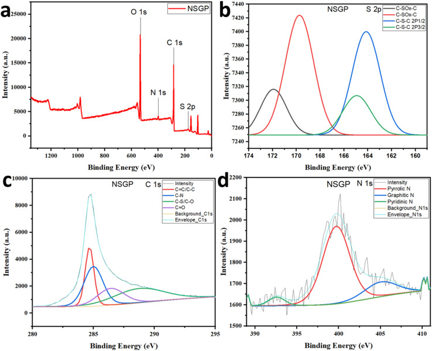
The CV curves for the GP, NGP, and NSGP-based electrodes between 0–1 V are displayed in Fig. S5a–c,† respectively. The three samples' CV curves are quasi-rectangular, which points to an EDLC with a minor pseudocapacitor. Fig. 6a shows the CV curves for the GP, NGP, and NSGP at 50 mV s−1. The CV curve for the NSGP is the largest, which shows the effect of N and S co-doping. The computed CV-specific capacitances of the NSGP, NGP, and GP samples using eqn (1)versus different scan rates from 5–100 mV s−1 are displayed in Fig. 6b. The NGP and GP electrodes display specific capacitances of 229.87 and 206.47 F g−1 at 5 mV s−1, respectively, as the NSGP electrode has a higher specific capacitance of 260.86 F g−1 at 5 mV s−1. The quasi-triangular-shaped GCD curves for the GP, NGP, and NSGP-based electrodes are shown in Fig. S6a–c,† respectively. These curves are shown within a 0–1 V potential window. The shape of the CV curves and the quasi-triangular shape of the GCD curves both point to the biochar-based electrode's EDLC and pseudocapacitor characteristics. Fig. 6c shows the GCD curves for the GP, NGP, and NSGP at 1 A g−1. The GCD curve for the NSGP has the longest discharge curve among the curves, which shows the effect of more active sites due to co-doping. Specific capacitances against different current densities are shown in Fig. 6d for the three samples. The specific capacitance of NSGP at 1 A g−1 is 257.01 F g−1, while the specific capacitances of the GP and NGP are 230.22 and 208.78 F g−1, respectively. The N and S co-doping improved the active sites in the NSGP electrode material, leading to the enhanced performance of the electrode.
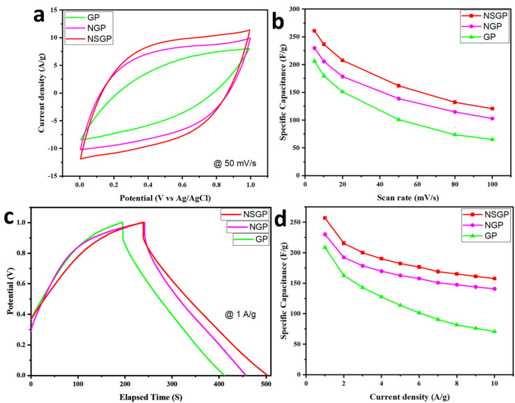
Diffusion of ions and the kinetics of the NSGP, NGP, and GP-based electrodes were investigated by EIS. The Nyquist plot's equivalent circuit and the Nyquist plots of NSGP, NGP, and GP-based electrodes are shown in Fig. 7. The pseudocapacitor behavior is shown by the Nyquist plot, which shows the deviation of a lean line from the imaginary impedance axis at low frequency. The resistance of charge transfer (R2) is indicated by semicircles that form between the high and middle frequencies on the graphs because the biochar's surface contains heteroatoms. The analogous circuit's fitting parameters for the GP, NGP, and NSGP electrodes are displayed in Table 3. Plots and fitting parameters demonstrate that the lowest R2 (1.874 Ω) of the NSGP-based electrode can be attributed to the biochar's S and N co-doping, which facilitates rapid movement of ions to the electrode/electrolyte interface. Compared to GP (9.636 Ω), NGP has a lower R2 (4.453 Ω). NSGP's R1 is 0.3218 Ω, comparatively lower than NGP's R1 (0.3835 Ω) and GP's R1 (0.74221 Ω). The reduced resistance of the NSGP electrode material in comparison to the other two samples contributes to its superior electrochemical performance.
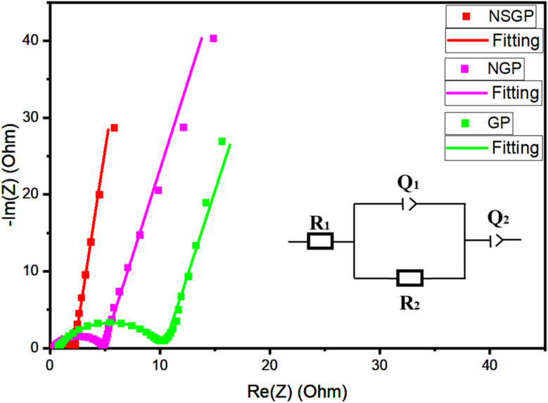
| Sample | R 1 (Ω) | R 2 (Ω) | Q 2 (F sa−1) | Q 3 (F sa−1) |
|---|---|---|---|---|
| GP | 0.74221 | 9.636 | 0.1536 × 10−3 | 0.055 |
| NGP | 0.3835 | 4.453 | 0.1047 × 10−3 | 0.03616 |
| NSGP | 0.3218 | 1.874 | 0.3784 × 10−3 | 0.05392 |
To examine the real application of this study, the NSGP electrode is used for the NSGP//NSGP supercapacitor device due to its outstanding electrochemical performance in a three-electrode configuration. Fig. 8a shows the CV curve of the NSGP/NSGP supercapacitor device running at 1 V working voltage at different scan rates between 5–100 mV s−1. It is evident from the quasi-rectangular CV curves that the pseudocapacitor and EDLC are both in operation. The NSGP/NSGP supercapacitor's GCD curves are exhibited in Fig. 8b at a voltage of 1 V. The data do not display an ideal triangular form indicating the pseudocapacitive contribution of N and S surface functionalities. The specific capacitances of the NSGP/NSGP supercapacitor device at different current densities are plotted in Fig. 8c. The specific capacitance results are 60.74 F g−1 at 10 A g−1 and 99.84 F g−1 at 1 A g−1. Fig. 8d displays the NSGP//NSGP supercapacitor's Ragone plot, which shows a power density of 500 W kg−1 and an energy density of 13.87 W h kg−1, respectively.
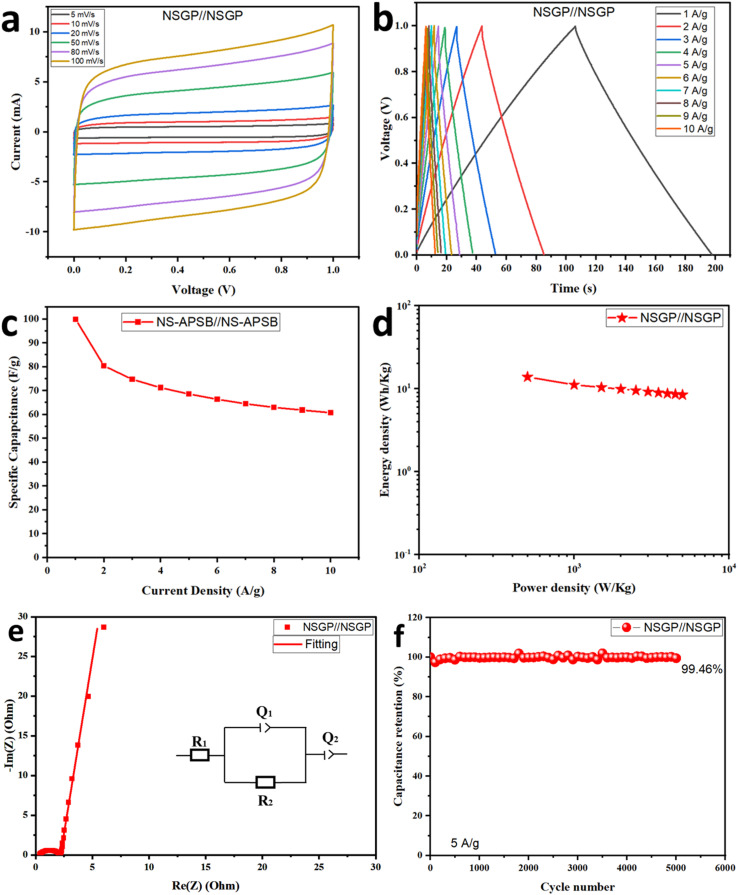
Moreover, the ions kinetics and diffusion in the NSGP//NSGP supercapacitor can be examined using EIS. Fig. 8e shows the equivalent circuit's fitting and Nyquist plots of the NSGP//NSGP supercapacitor. The NSGP/NSGP supercapacitor has a reduced R2 value of 1.866 Ω and an R1 value of 0.3215 Ω, which points to strong electrolyte ion mobility. Fig. 8f displays the cyclic stability graph of the NSGP//NSGP supercapacitor device. The capacitance retention of the device is 99.46% at 5 A g−1 after 5000 cycles in 1 M H2SO4 electrolyte. This shows the high long-life cycle of the electrode materials in supercapacitor applications. Table 4 presents a comparison between the published biochar-based electrodes from other sources and samples' results in the electrochemical configuration using the three-electrode system and highlights the better electrochemical behavior demonstrated by the samples of the current work.
| Precursor | Electrode material (mg cm−2) | Electrolyte | C s (F g−1) | Current density (A g−1) | Reference |
|---|---|---|---|---|---|
| Rice husk | 4 | 6 M KOH | 112 | 0.25 | 58 |
| Bamboo | 4–6 | 6 M KOH | 187 | 1 | 59 |
| Onion peels | Nil | 3 M KNO3 | 77 | 1 | 60 |
| Peanut shells | Nil | 2.5 M KNO3 | 167 | 1 | 51 |
| Peanut shells | 3 | 6 M KOH | 179.9 | 0.5 | 61 |
| NS-APSB | 3 | 1 M H2SO4 | 224 | 1 | 4 |
| Banana peels | Nil | 1 M KOH | 199 | 0.5 | 62 |
| GP | 3 | 1 M H2SO4 | 208.78 | 1 | This study |
| NGP | 3 | 1 M H2SO4 | 230.22 | 1 | This study |
| NSGP | 3 | 1 M H2SO4 | 257.01 | 1 | This study |
GP was synthesized effectively from GPP via carbonization and chemical activation. NGP and NSGP were synthesized by doping and co-doping GP with melamine and melamine/thiourea, respectively. The pore structure and active sites of NSGP were enhanced by the dopants, thereby facilitating the electrolyte ion migration and charge transfer into the electrolyte interface. Better electrochemical performance was seen at 1 A g−1 in the NSGP material due to its improved pore structure and active sites, with a specific capacitance of 257.01 F g−1 whilst 230.22 F g−1 and 208.78 F g−1 in the NGP and GP-based materials, respectively. Furthermore, the built NSGP//NSGP supercapacitor device obtained remarkable energy and power densities of 13.87 W h kg−1 and 500 W kg−1, respectively, with a cyclic stability of 99.46% after 5000 cycles at 5 A g−1. This study demonstrates the utilization of GP in developing electrodes for supercapacitor applications, contributes to waste valorization, and agrees with the existing knowledge that controlled heteroatom co-doping is better than single doping.
The authors agree that the data would be provided upon request.
Wasiu Olakunle Makinde: conceptualization, writing – original draft, investigation, writing – review & editing, formal analysis. Mohsen A. Hassan: supervision, writing – review & editing. Guoqing Guan: supervision, writing – review & editing. Nieves López-Salas: supervision, writing – review & editing. Ying Pan: investigation, formal analysis. Ahmed S. G. Khalil: supervision, Writing – review & editing, project administration, conceptualization.
The authors declare that no competing interest or individual connection may have influenced any of the work mentioned in this paper.
We acknowledge the financial support of the Egyptian and Japanese governments through the TICAD7 scholarship program at the Egypt-Japan University of Science and Technology (E-JUST). We acknowledge the financial support of DAAD from the fund of BMZ through the We-AFRICA project No. 57708984. We are also grateful for the additional support provided by AfriGer-SDG DAAD project.
Electronic supplementary information (ESI) available. See DOI: https://doi.org/10.1039/d5ra01262g
Wang J. Azam W. Natural resource scarcity, fossil fuel energy consumption, and total greenhouse gas emissions in top emitting countries. Geosci. Front. 2024;15:101757.
Mitić P. Fedajev A. Radulescu M. Rehman A. The relationship between CO2 emissions, economic growth, available energy, and employment in SEE countries. Environ. Sci. Pollut. Res. 2023;30:16140–16155. doi: 10.1007/s11356-022-23356-3.
Osman A. I. Chen L. Yang M. Msigwa G. Farghali M. Fawzy S. Rooney D. W. Yap P. S. Cost, environmental impact, and resilience of renewable energy under a changing climate: a review. Environ. Chem. Lett. 2023;21:741–764. doi: 10.1007/s10311-022-01532-8.
Makinde W. O. Hassan M. A. Pan Y. Guan G. Khalil A. S. G. Sulfur and nitrogen co-doping of peanut shell-derived biochar for sustainable supercapacitor applications. J. Alloys Compd. 2024;991:174452. doi: 10.1016/j.jallcom.2024.174452.
Patil A. M. Chodankar N. R. Jung E. Roy S. Dubal D. P. Guan G. Han Y. K. Jun S. C. 2D-on-2D core-shell Co3(PO4)2 stacked micropetals@Co2Mo3O8 nanosheets and binder-free 2D CNT-Ti3C2T: X-MXene electrodes for high-energy solid-state flexible supercapacitors. J. Mater. Chem. A. 2021;9:26135–26148. doi: 10.1039/d1ta07919k.
Ugwuoke C. O. Ghali M. El-Moneim A. A. Green synthesis of carbon dots from Nigella sativa seeds for supercapacitor application. J. Energy Storage. 2024;95:112634. doi: 10.1016/j.est.2024.112634.
Patil A. M. Wang J. Li S. Hao X. Du X. Wang Z. Hao X. Abudula A. Guan G. Bilateral growth of monoclinic WO3 and 2D Ti3C2Tx on 3D free-standing hollow graphene foam for all-solid-state supercapacitor. Chem. Eng. J. 2021;421:127883. doi: 10.1016/j.cej.2020.127883.
Wei X. Wang X. Wang Y. Li C. Bai Q. Shen Y. Uyama H. Biomass carbon aerogels by polyatomic synergistic modification and synchronous activation for supercapacitors. J. Energy Storage. 2024;77:110013. doi: 10.1016/j.est.2023.110013.
Wu F. Gao J. Zhai X. Xie M. Sun Y. Kang H. Tian Q. Qiu H. Hierarchical porous carbon microrods derived from albizia flowers for high performance supercapacitors. Carbon. 2019;147:242–251. doi: 10.1016/j.carbon.2019.02.072.
Zhuang J. Li G. Wang M. Li G. Li Y. Jia L. Biomass-Derived Carbon Quantum Dots-Induced Self-Assembly of 3D Networks of Nickel-Cobalt Double Hydroxide Nanorods as High-Performance Electrode Materials for Supercapacitors. ChemElectroChem. 2022;9:1–10. doi: 10.1002/celc.202200296.
Barbosa Nogueira M. J. Chauque S. Sperati V. Savio L. Divitini G. Pasquale L. Marras S. Franchi P. Paciornik S. Proietti Zaccaria R. Ginoble Pandoli O. Untreated bamboo biochar as anode material for sustainable lithium ion batteries. Biomass Bioenergy. 2025;193:107511. doi: 10.1016/j.biombioe.2024.107511.
Matos R. Fernandes A. J. S. Abdelkader-Fernández V. K. Peixoto A. F. Fernandes D. M. High performance metal-free N/S-doped biochars towards oxygen reduction reaction. Biomass Bioenergy. 2025;193:107523. doi: 10.1016/j.biombioe.2024.107523.
Parsimehr H. Ehsani A. Payam S. A. Electrochemical energy storage electrodes from rice biochar. Biomass Convers. Biorefin. 2023;13:12413–12429. doi: 10.1007/s13399-021-02089-2.
Chaudhary P. Bansal S. Sharma B. B. Saini S. Joshi A. Waste biomass-derived activated carbons for various energy storage device applications: a review. J. Energy Storage. 2024;78:109996. doi: 10.1016/j.est.2023.109996.
Patwardhan S. B. Pandit S. Kumar Gupta P. Kumar Jha N. Rawat J. Joshi H. C. Priya K. Gupta M. Lahiri D. Nag M. Kumar Thakur V. Kumar Kesari K. Recent advances in the application of biochar in microbial electrochemical cells. Fuel. 2022;311:122501. doi: 10.1016/j.fuel.2021.122501.
Hassaan M. A. Elkatory M. R. El-Nemr M. A. Ragab S. Yi X. Huang M. El Nemr A. Synthesis, characterization, optimization and application of Pisum sativum peels S and N-doping biochars in the production of biogas from Ulva lactuca. Renewable Energy. 2024;221:119747. doi: 10.1016/j.renene.2023.119747.
Novoseltseva V. Yankovych H. Kovalenko O. Václavíková M. Melnyk I. Production of high-performance lead(II) ions adsorbents from pea peels waste as a sustainable resource. Waste Manage. Res. 2021;39:584–593. doi: 10.1177/0734242X20943272.
Abd El-Galil A. A. Negm El-Dein A. Awad H. M. Helmy W. A. Chemical composition and biological activities of aqueous extracts and their sulfated derivatives of pea peel (Pisum sativum L.) Biocatal. Agric. Biotechnol. 2021;35:102077. doi: 10.1016/j.bcab.2021.102077.
El-Nemr M. A. Yılmaz M. Ragab S. Hassaan M. A. El Nemr A. Isotherm and kinetic studies of acid yellow 11 dye adsorption from wastewater using Pisum sativum peels microporous activated carbon. Sci. Rep. 2023;13:1–22. doi: 10.1038/s41598-023-31433-x.
Rubangakene N. O. Elkady M. Elwardany A. Fujii M. Sekiguchi H. Shokry H. Effective decontamination of methylene blue from aqueous solutions using novel nano-magnetic biochar from green pea peels. Environ. Res. 2023;220:115272. doi: 10.1016/j.envres.2023.115272.
Rubangakene N. O. Elwardany A. Fujii M. Sekiguchi H. Elkady M. Shokry H. Biosorption of Congo red dye from aqueous solutions using pristine biochar and ZnO biochar from green pea peels. Chem. Eng. Res. Des. 2023;189:636–651. doi: 10.1016/j.cherd.2022.12.003.
Patil P. H. Ravan S. B. Thoravat S. S. Dongale T. D. Jadhav S. A. Synthesis of graphitic carbon from Pisum sativum for supercapacitor applications. Korean J. Chem. Eng. 2023;40:2087–2090. doi: 10.1007/s11814-023-1525-9.
Patil P. H. Kulkarni V. V. Mane A. K. Dongale T. D. Jadhav S. A. Synthesis and electrochemical testing of novel doped polyaniline and biomass-derived carbon-based composite for supercapacitors. Polym. Adv. Technol. 2024;35:1–9. doi: 10.1002/pat.6362.
Lin Y. Li F. Zhang Q. Liu G. Xue C. Controllable preparation of green biochar based high-performance supercapacitors. Ionics. 2022;28:2525–2561. doi: 10.1007/s11581-022-04557-9.
Ahmed Alsharif M. Alatawi A. Hamdalla T. A. Alfadhli S. Darwish A. A. A. CuO nanoparticles mixed with activated BC extracted from algae as promising material for supercapacitor electrodes. Sci. Rep. 2023;13:22321. doi: 10.1038/s41598-023-49760-4.
Zhao Y. Qi C. Zou Q. Sun W. High-performance supercapacitor electrode at commercial-level mass loading from N-enriched activated carbon derived from soybean dregs. J. Energy Storage. 2023;73:109252. doi: 10.1016/j.est.2023.109252.
Nazir G. Rehman A. Hussain S. Ikram M. Park S. J. Supercapacitor performance based on nitrogen and sulfur co-doped hierarchically porous carbons: superior rate capability and cycle stability. Int. J. Energy Res. 2022;46:15602–15616. doi: 10.1002/er.8256.
Chen M. Le T. H. Zhou Y. Kang F. Yang Y. Thiourea-Induced N/S Dual-Doped Hierarchical Porous Carbon Nanofibers for High-Performance Lithium-Ion Capacitors. ACS Appl. Energy Mater. 2020;3:1653–1664. doi: 10.1021/acsaem.9b02157.
Lan B. Zhang X. Lu J. Wei C. Wang Y. Wen G. N, P, S triple-doped honeycomb porous carbon multi-dimensionally enhanced CoP for pseudocapacitance-driven high-power lithium storage. Appl. Surf. Sci. 2022;605:154801. doi: 10.1016/j.apsusc.2022.154801.
Mohamed S. R. E. Abdul-Aziz M. R. R. Saber S. Khabiri G. Khalil A. S. G. Precise engineering of Fe3O4/MWCNTs heterostructures for high-performance supercapacitors. J. Alloys Compd. 2023;957:170281. doi: 10.1016/j.jallcom.2023.170281.
Ali B. A. Omar A. M. A. Khalil A. S. G. Allam N. K. Untapped Potential of Polymorph MoS2: Tuned Cationic Intercalation for High-Performance Symmetric Supercapacitors. ACS Appl. Mater. Interfaces. 2019;11:33955–33965. doi: 10.1021/acsami.9b11444.
Norouzi O. Di Maria F. Dutta A. Biochar-based composites as electrode active materials in hybrid supercapacitors with particular focus on surface topography and morphology. J. Energy Storage. 2020;29:101291. doi: 10.1016/j.est.2020.101291.
Ajmal Z. Ali H. Ullah S. Kumar A. Abboud M. Gul H. Al-hadeethi Y. Alshammari A. S. Almuqati N. Ashraf G. A. Hassan N. Qadeer A. Hayat A. Ul Haq M. Hussain I. Murtaza A. Use of carbon-based advanced materials for energy conversion and storage applications: recent development and future outlook. Fuel. 2024;367:131295. doi: 10.1016/j.fuel.2024.131295.
Khedulkar A. P. Dang V. D. Thamilselvan A. an Doong R. Pandit B. Sustainable high-energy supercapacitors: metal oxide-agricultural waste biochar composites paving the way for a greener future. J. Energy Storage. 2024;77:109723. doi: 10.1016/j.est.2023.109723.
Huarote-Garcia E. Cardenas-Riojas A. A. Monje I. E. López E. O. Arias-Pinedo O. M. Planes G. A. Baena-Moncada A. M. Activated Carbon Electrodes for Supercapacitors from Purple Corncob (Zea mays L.) ACS Environ. Au. 2024;4:80–88. doi: 10.1021/acsenvironau.3c00048.
Manimekala T. Sivasubramanian R. Karthikeyan S. Dharmalingam G. Biomass derived activated carbon-based high-performance electrodes for supercapacitor applications. J. Porous Mater. 2023;30:289–301. doi: 10.1007/s10934-022-01338-7.
Rajasekaran S. J. Grace A. N. Jacob G. Alodhayb A. Pandiaraj S. Raghavan V. Investigation of Different Aqueous Electrolytes for Biomass-Derived Activated Carbon-Based Supercapacitors. Catalysts. 2023;13:13020286. doi: 10.3390/catal13020286.
Zhan Y. Bai J. Guo F. Zhou H. Shu R. Yu Y. Qian L. Facile synthesis of biomass-derived porous carbons incorporated with CuO nanoparticles as promising electrode materials for high-performance supercapacitor applications. J. Alloys Compd. 2021;885:161014. doi: 10.1016/j.jallcom.2021.161014.
Bahadur R. Singh G. Li Z. Singh B. Srivastava R. Sakamoto Y. Chang S. Murugavel R. Vinu A. Hybrid nanoarchitectonics of ordered mesoporous C60–BCN with high surface area for supercapacitors and lithium-ion batteries. Carbon. 2024;216:118568. doi: 10.1016/j.carbon.2023.118568.
Yan H. Deng M. Qu K. Li Q. Huan C. Xiong W. Wu J. Luo B. Xiong W. Utilization of peanut shells for the fabrication of high-performance activated carbon electrodes in capacitive deionization. Ionics. 2023;29:5111–5122. doi: 10.1007/s11581-023-05226-1.
Ma T. Xu S. Zhu M. Hierarchical Porous Carbon Based on Waste Quinoa Straw for High-Performance Supercapacitors. ACS Omega. 2024;9:13592–13602. doi: 10.1021/acsomega.3c04692.
Li Y. Wei Z. Zhan Z. Pei J. Zhao C. Xu W. Sun Q. Chen W. Li S. Pang S. Scale-up biomass strategy to macro-microporous nitrogen-doped carbon aerogels for ionic liquid supercapacitors with high efficiency. J. Energy Storage. 2024;76:109778. doi: 10.1016/j.est.2023.109778.
Xue C. F. Lin Y. Zhao W. Wu T. Wei Y. Y. Li X. H. Yan W. J. Hao X. G. Green preparation of high active biochar with tetra-heteroatom self-doped surface for aqueous electrochemical supercapacitor with boosted energy density. J. Energy Storage. 2024;90:111872. doi: 10.1016/j.est.2024.111872.
Zhu C. Yan J. Fang X. N/O codoped carbons with enriched micropore for high-energy supercapacitor in a wide temperature range. J. Energy Storage. 2024;84:110988. doi: 10.1016/j.est.2024.110988.
Ngidi N. P. D. Koekemoer A. F. Ndlela S. S. Recent advancement in the electrochemical performance of electrochemical capacitors based on biomass-derived porous carbon: a review. J. Energy Storage. 2024;89:111638. doi: 10.1016/j.est.2024.111638.
Desa S. S. Ishii T. Nueangnoraj K. Sulfur-Doped Carbons from Durian Peels, Their Surface Characteristics, and Electrochemical Behaviors. ACS Omega. 2021;6:24902–24909. doi: 10.1021/acsomega.1c03760.
Gopalakrishnan A. Badhulika S. Effect of self-doped heteroatoms on the performance of biomass-derived carbon for supercapacitor applications. J. Power Sources. 2020;480:228830. doi: 10.1016/j.jpowsour.2020.228830.
Wang X. Luo Z. Huang J. Chen Z. Xiang T. Feng Z. Wang J. Wang S. Ma Y. Yang H. Li X. S/N-co-doped graphite nanosheets exfoliated via three-roll milling for high-performance sodium/potassium ion batteries. J. Mater. Sci. Technol. 2023;147:47–55. doi: 10.1016/j.jmst.2022.11.015.
Zhang Y. Zheng H. Wang Q. Huang Y. Li W. Xiang J. Huang W. Yuan P. Xue H. Wang S. Zhou Y. Lu W. Yang X. 3-Dimensional porous carbon derived from waste aucklandia lappa straw for high-performance liquid and all-solid-state supercapacitors. J. Electroanal. Chem. 2024;953:117992. doi: 10.1016/j.jelechem.2023.117992.
Bai Q. Li H. Zhang L. Li C. Shen Y. Uyama H. Flexible Solid-State Supercapacitors Derived from Biomass Konjac/Polyacrylonitrile-Based Nitrogen-Doped Porous Carbon. ACS Appl. Mater. Interfaces. 2020;12:55913–55925. doi: 10.1021/acsami.0c16752.
Sylla N. F. Ndiaye N. M. Ngom B. D. Mutuma B. K. Momodu D. Chaker M. Manyala N. Ex situ nitrogen-doped porous carbons as electrode materials for high performance supercapacitor. J. Colloid Interface Sci. 2020;569:332–345. doi: 10.1016/j.jcis.2020.02.061.
Sun Q. Yu D. Mo F. Wu M. Liu Y. Dong X. Wool textile-derived nitrogen-doped porous carbon cloth for a binder-free electrode material for high-performance flexible solid-state supercapacitors. J. Mater. Sci. 2021;56:2412–2424. doi: 10.1007/s10853-020-05314-x.
Li Y. Zhong W. Yang C. Zheng F. Pan Q. Liu Y. Wang G. Xiong X. Liu M. N/S codoped carbon microboxes with expanded interlayer distance toward excellent potassium storage. Chem. Eng. J. 2019;358:1147–1154. doi: 10.1016/j.cej.2018.10.135.
Kaur A. Pandey O. P. Brar L. K. Synergic effect of B and N dopants in graphene for supercapacitance and electrochemical sensing applications. J. Phys. Chem. Solids. 2023;180:111460. doi: 10.1016/j.jpcs.2023.111460.
Wang X. Shi G. An introduction to the chemistry of graphene. Phys. Chem. Chem. Phys. 2015;17:28484–28504. doi: 10.1039/c5cp05212b.
Yutomo E. B. Noor F. A. Winata T. Effect of the number of nitrogen dopants on the electronic and magnetic properties of graphitic and pyridinic N-doped graphene-a density-functional study. RSC Adv. 2021;11:18371–18380. doi: 10.1039/d1ra01095f.
Zhang J. Zhao C. Liu N. Zhang H. Liu J. Fu Y. Q. Guo B. Wang Z. Lei S. Hu P. A. Tunable electronic properties of graphene through controlling bonding configurations of doped nitrogen atoms. Sci. Rep. 2016;6:1–10. doi: 10.1038/srep28330.
Ray S. K. Pant B. Park M. Bastakoti B. P. Rice husk-derived sodium hydroxide activated hierarchical porous biochar as an efficient electrode material for supercapacitors. J. Anal. Appl. Pyrolysis. 2023;175:106207. doi: 10.1016/j.jaap.2023.106207.
Deng J. Xiong T. Xu F. Li M. Han C. Gong Y. Wang H. Wang Y. Inspired by bread leavening: One-pot synthesis of hierarchically porous carbon for supercapacitors. Green Chem. 2015;17:4053–4060. doi: 10.1039/c5gc00523j.
Musyoka N. M. Mutuma B. K. Manyala N. Onion-derived activated carbons with enhanced surface area for improved hydrogen storage and electrochemical energy application. RSC Adv. 2020;10:26928–26936. doi: 10.1039/d0ra04556j.
Li X. Ding D. Liu Z. Hui L. Guo T. You T. Cao Y. Zhao Y. Synthesis of P, S, N, Triple-Doped Porous Carbon from Steam Explosion Pretreated Peanut Shell as Electrode Material Applied on Supercapacitor. ChemElectroChem. 2022;9:202200035. doi: 10.1002/celc.202200035.
Nguyen T. N. Le P. A. Phung V. B. T. Facile green synthesis of carbon quantum dots and biomass-derived activated carbon from banana peels: synthesis and investigation. Biomass Convers. Biorefin. 2022;12:2407–2416. doi: 10.1007/s13399-020-00839-2.
The authors agree that the data would be provided upon request.